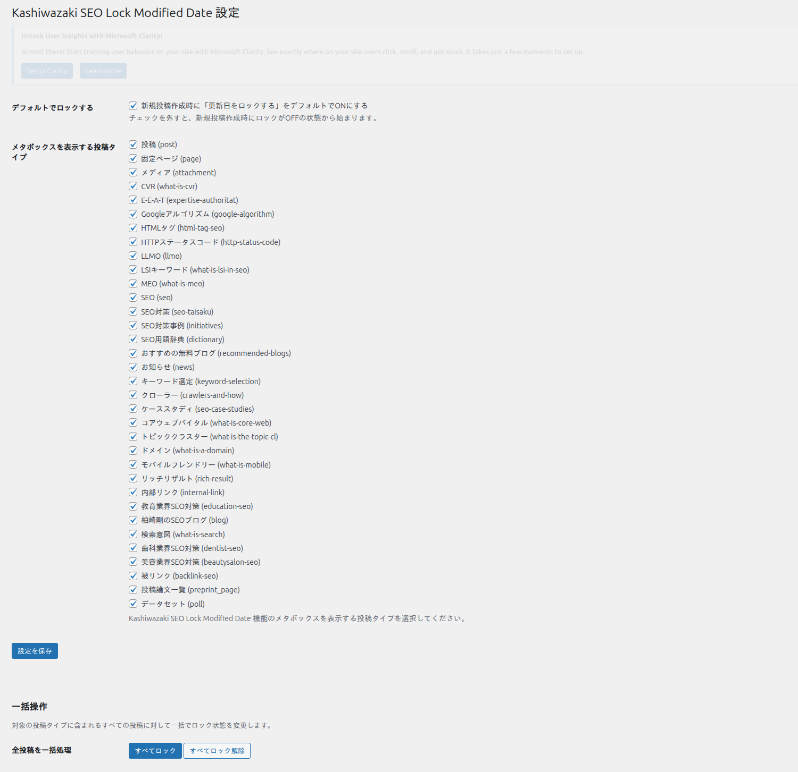

使い方
投稿ごとの個別ロック、手動日付変更、全投稿の一括ロック・アンロック操作について解説します。
個別ロック操作
投稿エディタのメタボックスから、個別の投稿に対して更新日のロック・アンロックを行います。

ロックをオンにする
投稿の編集画面を開き、「更新日ロック」メタボックスを確認します。
ロックトグルをオンに切り替えます。
投稿を保存（更新）します。ロックがオンの間は、投稿を何度保存しても post_modified の日時は変更されません。
ロック状態は投稿のメタデータ（post_meta）に保存されるため、エディタを閉じてもロック状態は維持されます。
手動日付変更
更新日を任意の日時に手動で変更できます。コンテンツの大幅なリライト時や、コンテンツリフレッシュ戦略の一環として活用できます。
投稿の編集画面で「更新日ロック」メタボックスの日付変更フィールドを確認します。
変更したい日時を入力します。過去の日付・未来の日付どちらも設定可能です。
投稿を保存（更新）します。post_modified が指定した日時に変更されます。
手動で日付を変更した場合、ロック状態に関係なく指定した日時が反映されます。日付変更後にロックをオンにすることで、以降の編集で日付が再び変わることを防止できます。
一括ロック・アンロック
全投稿に対して一括でロック・アンロックを実行できます。サイトの大規模なメンテナンス時に便利な機能です。
一括ロック
プラグインの設定画面を開きます。
「一括ロック」ボタンをクリックします。確認ダイアログが表示されます。
確認後、AJAX経由で全投稿のロックが実行されます。処理完了後、結果が画面に表示されます。
一括アンロック
プラグインの設定画面で「一括アンロック」ボタンをクリックします。
確認ダイアログで承認すると、AJAX経由で全投稿のロックが解除されます。
| 操作 | 効果 |
|---|---|
| 一括ロック | 全投稿の更新日をロック状態にします。以降の編集で更新日が変更されません。 |
| 一括アンロック | 全投稿のロックを解除します。以降の編集で更新日が通常どおり自動更新されます。 |
一括操作はAJAXで非同期的に処理されるため、投稿数が多い場合でもページがフリーズすることはありません。処理の進捗は画面上に表示されます。
運用上の注意点
| 項目 | 説明 |
|---|---|
| post_modified_gmt | post_modified と合わせて post_modified_gmt も同様にロック・変更されます。 |
| リビジョン | WordPressのリビジョン機能には影響しません。リビジョンは通常どおり作成されます。 |
| XMLサイトマップ | ロック状態の投稿は、XMLサイトマップの lastmod にロックされた日付が使用されます。 |
| REST API | REST API経由の更新でもロック機能は有効です。 |